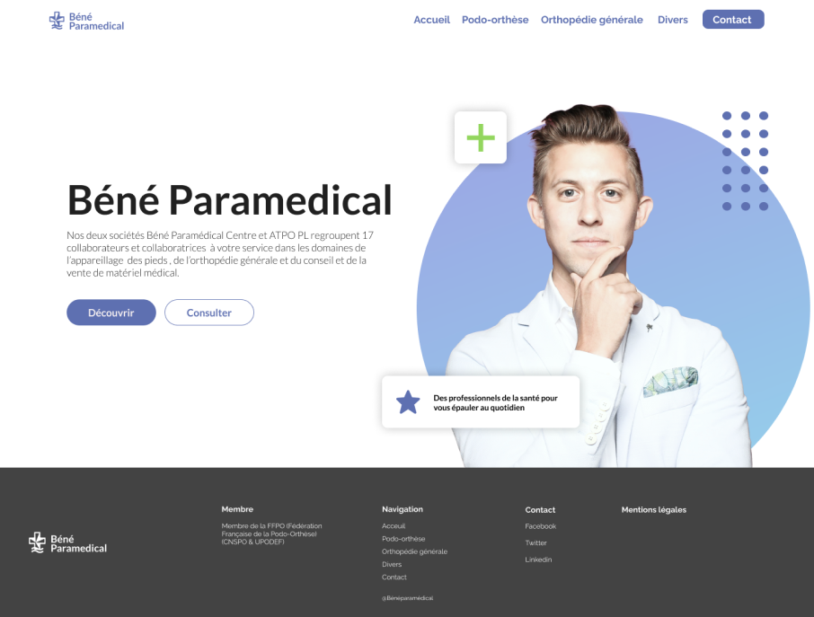

Béné Paramédical est une société constitué de spécialiste dans l’orthopédie générale et dans le conseil et la vente de matériel médical. Le site que possedait cette société était dépassé et avait besoin d’une refonte complète. Suite a cela, je me suis associé avec un collègue pour proposer une nouvelle version du site, plus moderne tout en respectant l’identité de Béné Paramédical. Pour le rélisation de ce projet j’ai utilisé Figma pour la création des maquettes et le prototypage.

01-Homepage de l’app avec sélection des catégories-
Ce projet était un challenge de taille car la première version du site avait besoin de beaucoup modification au niveau du design global mais aussi au niveau de l’UX avec de nombreux problèmes au niveau de l’expérience utilisateur . Le fait que ce soit seulement un site vitrine était un point important et l’idée de ce dernier était de mettre en avant la prise de rendez-vous avec les professionnels. De plus, je devais adapter mon design pour qu’il corresponde au mieux au milieu médical avec des éléments discrets et assez épurés et des couleurs pâles